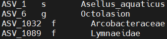
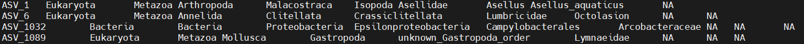

Chapter 6 More BLAST and MEGAN
6.1 Introduction to blast2megan
We may want to scale up the approaches described in chapters 04 and 05 to allow us to process larger data sets more rapidly. In this chapter we explain two ways you could do this:
- Using Slurm job arrays to simultaneous blast a split fasta file
- Running MEGAN from the command line and formatting the output to provide LCA information
We run through some hypothetical examples and draw your attention to some of the key bits of code. This workflow is based on an automated command line workflow called blast2megan which is designed for use on a specific HPC (the University of Sheffield's Bessemer cluster), but the scripts associated with blast2megan can be easily modified for use on your own cluster.
These steps are not intended to be run on the web VNC, but the workflow is provided in case it is useful for your own data.
6.2 Running blast in array mode
NCBI nt is an enormous database containing tens of millions of sequences. If you have a long list of ASVs, 'blasting' hundreds or thousands of sequences against nt can take many hours or even days. To speed things up we can use the Slurm workload manager (used by many HPCs) to split blast into an array job and run several blast searches simultaneously. Many HPCs provide their own information about how to use slurm effectively (see for example the University of Sheffield's HPC documentation on advanced job submission with slurm).
Below we outline the main steps required to use a slurm job array to process a large number of sequences:
6.2.1 Split the input file
Say we have an fasta file 'asv.fasta' with 1000 sequences, and we want to split it into 10 smaller files (with 100 sequences each) that can be run simultaneously. We can use awk to split the file into chunks like so:
### use awk to split a fasta file
awk 'BEGIN {n=0;} /^>/ {if(n%100==0){file=sprintf("chunk%d.fa",n);} print > file; n++; next;} { print >> file; }' < asv.fastaYou don't need to fully understand how this is splitting the file, but it's worth noting a couple of things:
/^>/: the characters between two forward slashes are what we are tell awk to look for (what is known as a regular expression) - in this case a '>' at the start of a line (used by fasta files to denote the sequence name and description),if(n%100==0): the '100' is how many sequences will be included in each chunk (you can set it to any number),file=sprintf("chunk%d.fa",n): this is how we define how the output files will be called. in the example it is set to 'chunk%d', where '%d' is the line number of the original file (starting at 0). So our chunk files will be called 'chunk0.fa', 'chunk100.fa' all the way up to 'chunk900.fa',
6.2.2 Make a list of the subfiles
Now we will make a text file containing a list of all the chunks we want to run on the job array. This is easily achieved with the ls command. It's also worth double checking how many chunk files there are in the list, as we will need that information in the following steps:
6.2.3 Making the array script
Now we have split our fasta file up, we can move on to the array. First, we will have to make a simple bash script that reads in the information from the 'list_of_chunks.txt' file, and uses that as an input for blast.
Below are the main commands you would need to include:
# create a variable FASTA corresponding to the information on a numbered line of list_of_chunks.txt
FASTA=$(sed "${SLURM_ARRAY_TASK_ID}q;d" < (cat list_of_chunks.txt))
# Run blastn using the newly defined FASTA variable. Make sure the path to the nt database is correct!
blastn -query ${FASTA} \
-task blastn \
-db /path/to/ncbi/nt \
-out ${FASTA}_blast.out.tab \
-outfmt 6When the job array is submitted this script will be run as many times as specified (it will be 10 times in our example). For each numbered array job (1 to 10):
FASTA=$(...): a new variable called 'FASTA' is created based on some information we will providesed "${SLURM_ARRAY_TASK_ID}q;d": it is equal to the information on a single line (whose number is determine by which array job is running)< (cat list_of_chunks.txt): this file is the source of the information
Thus for array job 1 FASTA takes the value of line 1 in 'list_of_chunks.txt' (line 1 reads 'chunk0.fa'), while in array job 2 FASTA takes the value of line 2 in 'list_of_chunks.txt' (chunk100.fa). For each job in the array, the unique value of variable ${FASTA} is then used when calling blastn.
If you plan to use the command line version of MEGAN, we recommend altering the -outfmt argument slightly (see section 6.3.1 Preparing Blast for MEGAN for more details).
When making a script remember that you will have to include the shebang and set various other sbatch options. If blast is available through a conda environment you will also have to load this as well. Once this is done, you can save the script. We could call it something like 'blast_array.sh'. Depending on how permissions are applied in your HPC you may have to make the script executable using the chmod command (see this explainer on chmod). A script file can be made executable be running:
6.2.4 Running the array script
Finally we can submit the job as an array to slurm. Notice that we have to specify how many jobs our array is composed of. This must be equal to the number of lines in 'list_of_chunks.txt'.
Once the job has finished, you should have 10 'chunk%d.fa_blast.out.tab' files containing the blast results. The final step is to concatenate these files together with the cat command:
6.2.5 Arrays in blast2megan
The blast array in blast2megan makes use of two scripts, a preparatory script that splits the input and makes a list of files (01A_run_prep_for_blast.sh), and then the array itself (01B_run_blastn_array.sh). These scripts do a few additional things compared with the steps listed above, such as making sub-directories to store the 'chunk%d.fa' input files and 'chunk*.fa_blast.out.tab' output files. Please take a look at the readme and have a look inside the scripts themselves for more information.
6.3 MEGAN for command line
In Chapter 5 we provided information about the MEGAN application (GUI), but it is also possible to install a command line version of MEGAN on your cluster and automate the procedure of finding the Lowest Common Ancestor (LCA). Please speak to your HPC administrator for advice on installing new software.
6.3.1 Preparing Blast for MEGAN
The command line version of MEGAN requires a blast tab delimited file as input (-outfmt 6). However, it also expects the ncbi subject sequence id (column 2 in the blast tab file) to be a simple accession number (e.g. 'MT539258.1'), yet by default, the output will contain additional gene identifier information (e.g. 'gi|1846592020|gb|MT539258.1|'). Although this information can be filtered out afterwards (e.g. using awk), you can also amend the -outfmt argument so that only the accession is included:
# Run blastn with a custom list of column headers
blastn -query ${FASTA} \
-task blastn \
-db /path/to/ncbi/nt \
-out ${FASTA}_blast.out.tab \
-outfmt "6 qseqid saccver pident length mismatch gapopen qstart qend sstart send evalue bitscore"In this example of blast we specify exactly which column headers to include. Columns 1 and 3-12 are the default values, but we have used saccver (subject accession version) rather than sseqid (subject sequence ID) in column 2 to be compatible with command line MEGAN. This handy Guide to blastn output format 6 has more information about the default and optional columns in blast output format 6. It is possible to specify additional columns such as sscinames and sskingdoms which will provide the scientific names and the kingdom of the ncbi subject sequence (as long as the ncbi taxa database files 'taxdb.btd' and 'taxdb.bti' are present in the current working directory). This taxonomic information can provide a useful sanity check when looking at blast results, but must be removed before using MEGAN (this is the case for both GUI and command line), as the software will only process the blast tab file if it has the 12 columns matching those specified in the code above.
As explained in Chapter 5.1, it is also useful to filter blast results (using awk) for a minimum percentage identity and a minimum length before running MEGAN.
6.3.2 Running MEGAN on the command line
Once we have a filtered blast output file prepared, we can create a simple bash script for running the MEGAN blast2lca command. This is the critical piece of code that that must go in the script:
# MEGAN blast2lca command
path/to/megan/tools/blast2lca -i filtered_blast.out.tab \
-m BlastN \
-o megan_full_out.tsv \
-mdb megan-nucl-Feb2022.db \
-top 2Notice that certain arguments have been provided:
-ithe input file (blast tab delimited file)
-mthe type of blast that was run (BlastN in our case)
-owhat to call the output
-mdbthe location of the MEGAN nucleotide database
-topthe top percent
Other arguments can be set, and depending on your needs may be useful. Running path/to/megan/tools/blast2lca --help will provide more information about the arguments and options that can be set.
Blast2lca only retains blast hits that are less than the 'Top Percent' value away from the highest scoring hit (based on blast bit score). Top Percent has a default of 10, but setting it to a lower value (e.g. 1.5 or 2) may improve taxonomic assignment. For more information about Top Percent and the blast2lca algorithm please see the MEGAN manual.
As is the case with the MEGAN GUI, you will need a copy of the file 'megan-nucl-Feb2022.db' in order map the NCBI accession numbers to taxonomic classes. This file is available to download from the MEGAN website.
As explained in Section 6.2.3 Making the array script, you must include certain information in your bash script like the the shebang, and it is useful to provide other sbatch options. You may have to make the script executable with chmod. Once your script is saved and executable, run it like so:
At first glance this looks rather a mess. There are many missing values denoted by 'unknown'. This is because of the way blast2lca handles differences between prokaryotes and eukaryotes. Because these domains have a different number of taxonomic ranks (7 in prokaryotes, 8 in eukaryotes), blast2lca first checks the taxon path for prokaryotes (e.g. ASV_1032 in the example above) and writes 'unknown' if the domain is not prokaryotic. Thus for every eukaryotic sequence 6 values of 'unknown' are written between the domain and the kingdom.
Notice also that every taxonomic rank has a trailling number associated with it: this is the percentage of blast hits that match that taxon. If this number is less than 100 then there is some ambiguity about the identity of the taxon. It is recommended to only use taxonomic assignments that have 100% support. The lowest taxonomic level rank with 100% support is the lowest common ancestor.
Occasionally taxon paths will be missing information for intermediate taxonomic ranks. This could be for genuine taxonomic reasons (in the example above ASV_1089 is associated with the Lymnaeidae family of snails which belong to a superfamily, a superorder, and an infraclass, but not a regular order), or it may reflect missing data in the databases.
In the blast2megan pipeline, the script '02_run_blast2lca.sh' not only implements the blast2lca command but uses a series of piped awk and sed commands to reformat the output such that:
- a standardised taxon path is provided for all taxa
- only unambiguous taxa with 100% support are retained
- missing taxonomic levels are assigned a useful name
Two files are output by this script:
- megan_summary_out.tsv outputs just the LCA rank (s for species, g for genus etc) and the LCA. The output looks like this:

- megan_taxonpath_out.tsv contains all the taxonomic information down to the LCA, with NAs for ambiguous levels. The output looks like this:

The awk and sed commands are not provided here, but if you look inside the script 02_run_blast2lca.sh you will see that they all make use ofawkconditional statements. Although the code appears a little complex at first, the idea behind awk conditional statements is a simple one:ifsome argument is true, do 'A',elsedo 'B'. In this script, many awk conditional statements have been joined together using the pipe '|'.
6.4 Combining output with DADA2 output
The final bash script in the blast2megan pipeline is '03_run_make_summary_files.sh'. This script is simply a wrapper for an R script called '03_make_summary_files.R' that combines taxonomic assignment results from blast2megan with sequence data and ASV counts from DADA2 to create several summary files, including:
- ASV_taxa_seq_counts.tsv: a complete summary of taxonomic results (LCA taxon, taxon rank, and taxon path), sequence, and count results,
- ps_taxamat.tsv : ASV taxonomic results in matrix format for phyloseq,
- ps_countmat.tsv : ASV counts results in matrix format for phyloseq,
- ps_phylogeny.rds : phylogenetic tree for phyloseq prepared according to protocol of Callahan et al. 2016, see subsection Construct the phylogenetic tree.
The second, third and fourth files are designed to be inputs for the popular community analysis R package phyloseq.
If you are interested in understanding how it works, take a look at the R code in 03_make_summary_files.R. Among other things the script uses the R function merge to join together different data tables based on shared information (either the ASV sequence or the ASV number) and assigns column headers and rownames to the merged data (turning data tables into matrices). Notice that the script requires 'megan_summary_out.tsv' and 'megan_taxonpath_out.tsv (the output from the previous step, which it expects to find in the 'blast_out' directory) as well as the DADA2 output files '06_ASV_seqs.fasta' and '06_ASV_counts.tsv' (which it expects to find in the 'working_data' directory).